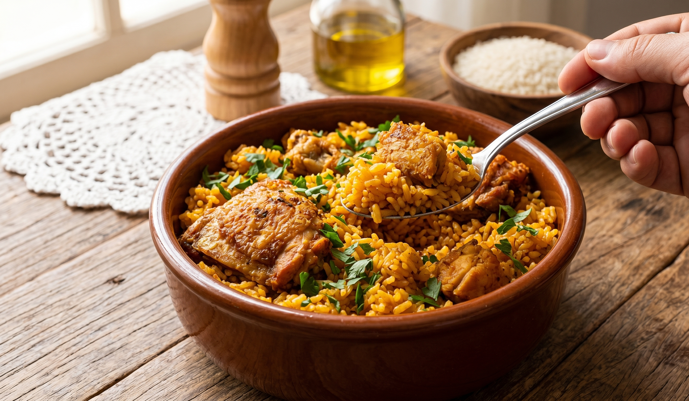

Galinhada is a classic Brazilian one-pot meal, perfect for those who crave a hearty and deeply flavorful dish. Featuring a whole chicken as its star ingredient, this recipe yields generous portions, making it ideal for feeding the entire family.
The foundation of the dish relies on rice and savory chicken broth. While seasonings can vary, this traditional version incorporates olive oil, tomato paste, onion, bell pepper, fresh parsley, and a touch of lemon. This precise combination enhances the poultry's natural flavor while perfectly seasoning the rice.
Historically, Galinhada was created by the bandeirantes (early colonial explorers) for sustenance during their long expeditions through the Brazilian interior. Consequently, it is an accessible, easy-to-prepare recipe designed to provide lasting energy. Today, its practicality and rich taste ensure it remains a beloved staple of Brazilian cuisine.
Prep time: 30 minutes